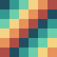

Start page / Image gallery
Pixels from our decoder.
These small geometric test images were generated for this project. No image library is used by the browser.
Open the JPEG gallery for baseline, progressive, grayscale and orientation examples.
PNG: color, compression and alpha
This image exercises PNG filters and our DEFLATE decompressor. Click it to return home.
The next image has transparent edges and translucent shapes. Its pixels blend with this dark background.
BMP and PPM
The same pattern, decoded from two simple formats.

When a resource is missing
The placeholder below is deliberate. Press Ctrl+I to see the missing path recorded alongside the successful loads.